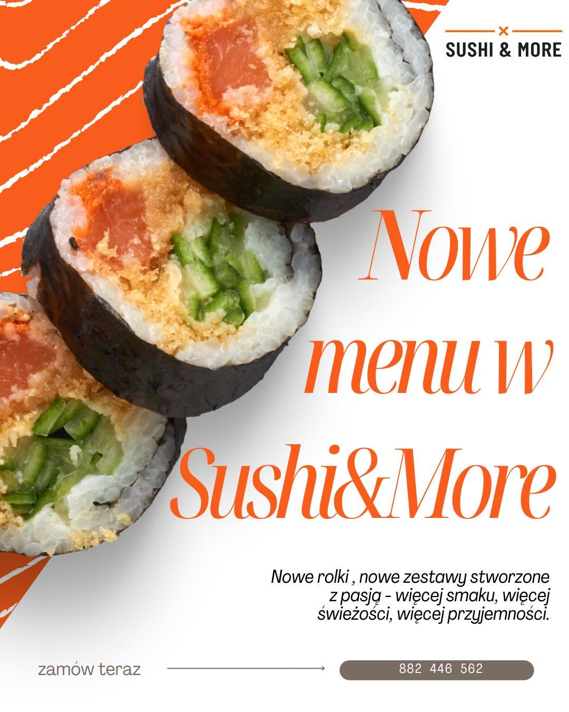
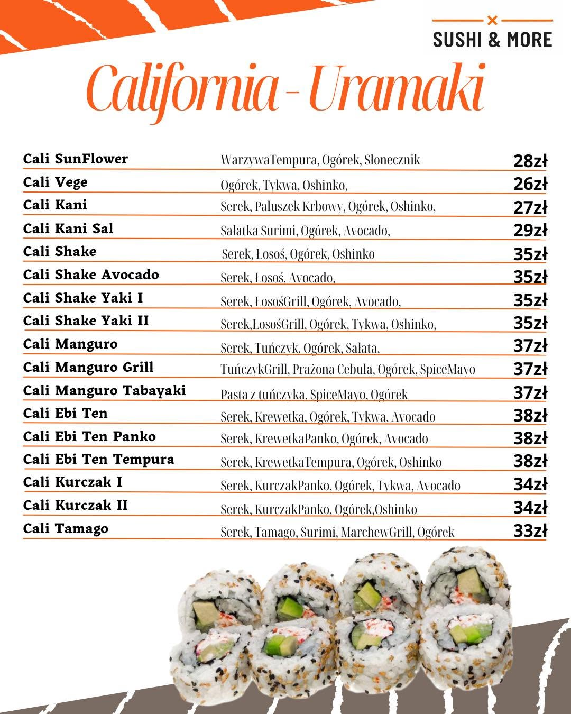
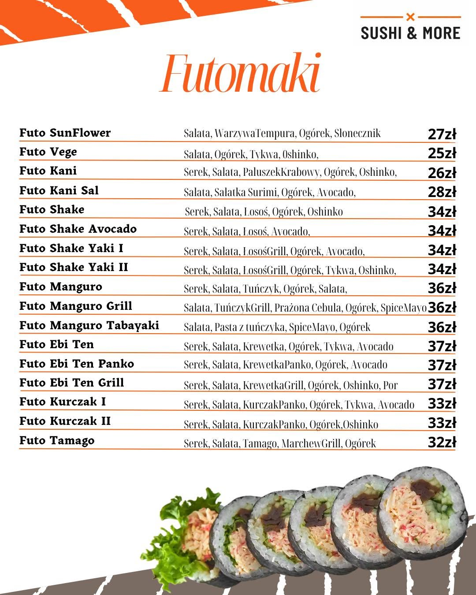
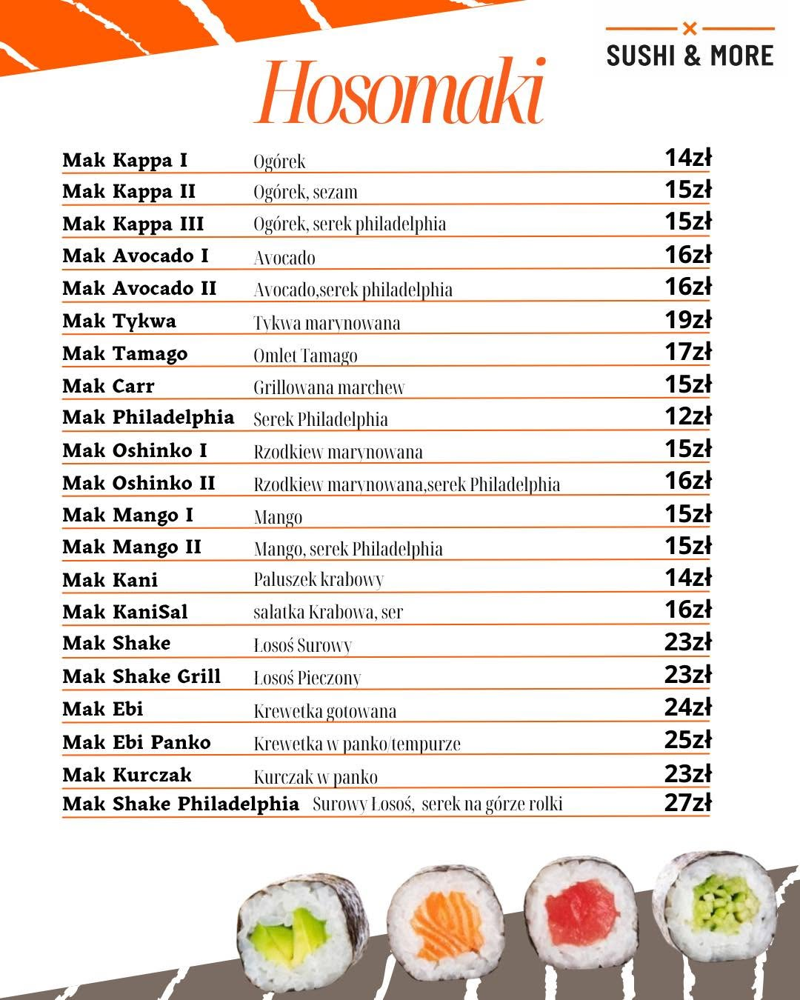
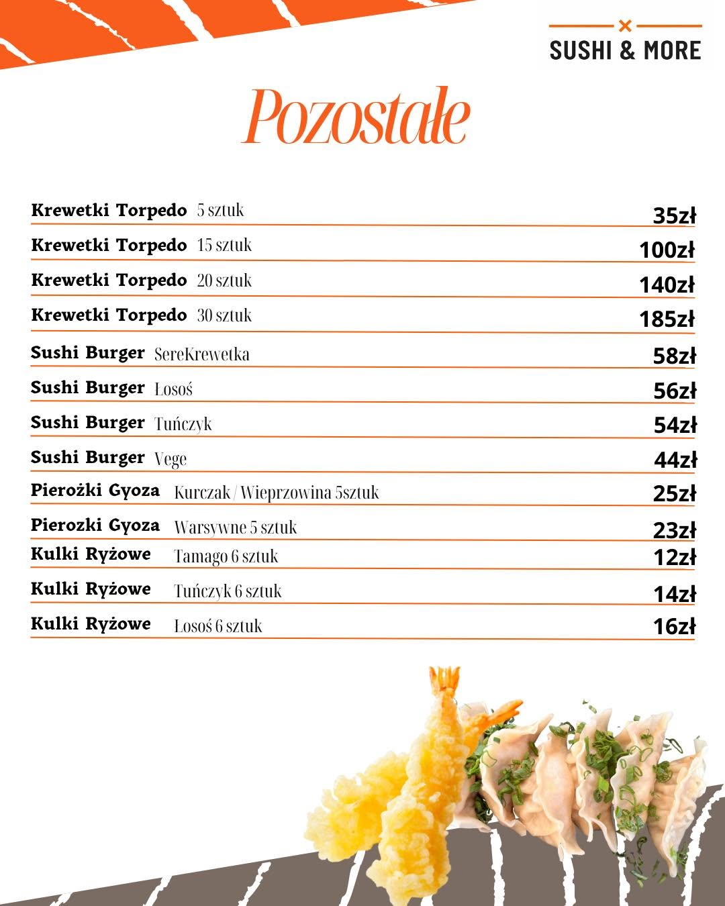
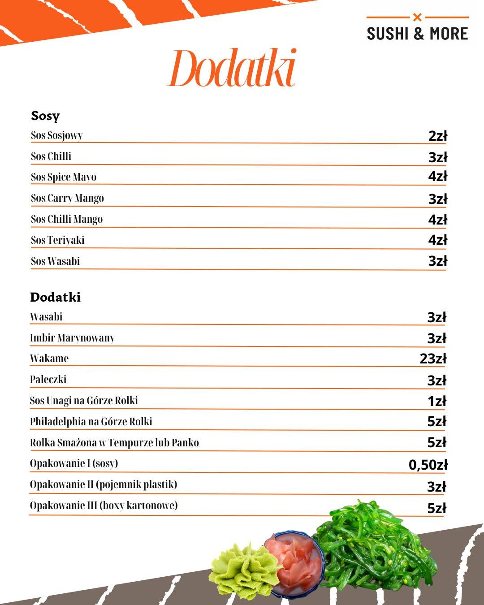

POLECAMY
Paradise Sushi&More
Krewetka · tatar z łososia · awokado
Sushi z pasją od 2023
Świeże, ręcznie robione sushi dowożone prosto do Ciebie. Bez lokalu. Bez kompromisów.
Poznaj Sushi&More
Od trzech lat tworzymy sushi, do którego chce się wracać. Wybieramy świeże składniki, rolujemy na bieżąco i dostarczamy je tam, gdzie właśnie masz ochotę na coś wyjątkowego.
Nasza historia →Pełne menu
Kliknij kartę, aby otworzyć pełny widok menu. Ceny i dostępność mogą się zmieniać.

Menu główne ↗
California Uramaki ↗
Futomaki ↗
Hosomaki ↗ Paradise Fusion Roll ↗
Paradise Fusion Roll ↗ Zestawy solo ↗
Zestawy solo ↗ Zestawy surowe ↗
Zestawy surowe ↗ Zestawy pieczone ↗
Zestawy pieczone ↗ Zestawy smażone ↗
Zestawy smażone ↗ Zestawy zapiekane ↗
Zestawy zapiekane ↗ Zestawy maki ↗
Zestawy maki ↗ Zestawy vege ↗
Zestawy vege ↗ Zestawy green ↗
Zestawy green ↗
Pozostałe pozycje ↗
Dodatki ↗Sushi Events
Wesele, osiemnastka, spotkanie firmowe czy domowa impreza — przygotujemy sushi na Twoją okazję. Zorganizujemy efektowne stanowisko sushi lub dostarczymy gotowe zestawy.
Poznaj ofertę eventową →Oferta eventowa
Każdą ofertę możemy dopasować do Twoich gości, miejsca i charakteru wydarzenia.
Gotowe kompozycje sushi z dowozem — idealne na każdą domową imprezę.
Imponujący stół pełen świeżych rolek, stworzony specjalnie dla Twoich gości.
Stanowisko z sushi masterem, który przygotowuje rolki na oczach gości.
Co u nas
WKRÓTCE · SUSHI Z MAKRO
Pracujemy nad lekkimi, pełnymi białka zestawami. Szczegóły i cennik pojawią się wkrótce.
Zapytaj na Facebooku ↗EVENTS · ZESTAWY NA OKAZJE
Zestawy 200, 400 lub 600 sztuk z dowozem — na osiemnastkę, wesele i każdą większą okazję.
Poznaj Sushi Events →FAQ
Nie znalazłeś odpowiedzi? Napisz do nas — chętnie pomożemy.
Skontaktuj się →Najprościej napisać do nas na Facebooku. Tam najszybciej potwierdzimy dostępność i szczegóły zamówienia.
Dowożimy do Sulęcina, Ośna Lubuskiego, Rzepina, Krzeszyc, Lubniewic, Torzymia, Kowalowa, Słońska i okolic. Napisz — potwierdzimy dostawę pod wskazany adres.
Tak! Mamy pyszne rolki vege i bez problemu dopasujemy zestaw do Twoich preferencji.
Najlepiej napisać do nas możliwie wcześnie. Przy większych zestawach i eventach rekomendujemy kontakt minimum 2–3 tygodnie wcześniej.
Możesz zapłacić gotówką przy odbiorze lub dostawie. Akceptujemy też przelew i BLIK — wtedy płatność realizujesz przed dostawą albo podczas odbioru zamówienia.
Przy zamówieniach z wyprzedzeniem postaramy się dopasować zestaw do Twoich preferencji i alergii. Napisz, czego potrzebujesz.
Do zestawów dobieramy dodatki, takie jak sos sojowy, wasabi, imbir i pałeczki. Dokładny zakres znajdziesz też na grafikach menu.
To większe zestawy sushi z dowozem na imprezy. W przyszłości oferta będzie rozszerzona także o stanowisko sushi na miejscu wydarzenia.
Masz ochotę?
Napisz do nas — najwygodniej przez Facebooka. Tam najszybciej potwierdzimy Twoje zamówienie.